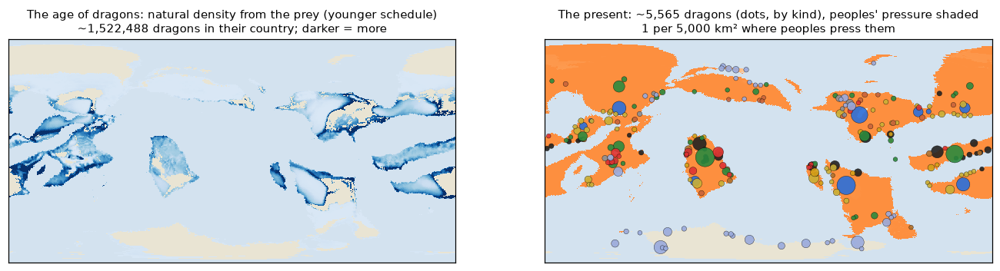
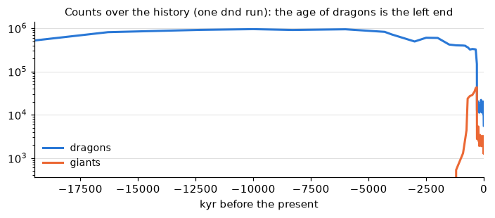
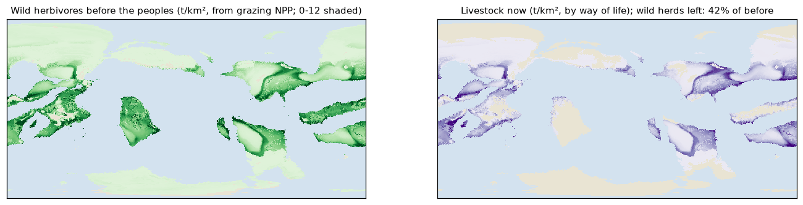
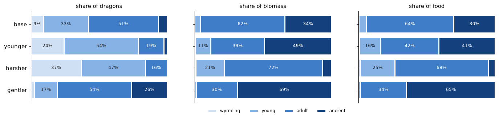
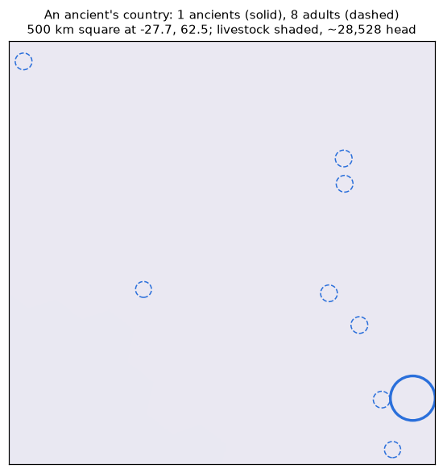

The age of dragons: natural against present numbers
PW-967 review, for the owner. World 2a7385 (L7), dnd peoples, roll 7000, settings at their defaults (owner 10-28): natural density from the prey,
younger age schedule, dragon generation 430 yr, dragons held to their food (PW-977 stage 1), 1 dragon per 5,000 km² and 1 giant per 2,000 km² where peoples press them. The other candidates are
worked from the same run's fields. Nothing is picked: the settings are meta.megafauna_natural, meta.dragon_ages, meta.dragon_generation.
1. Before the peoples, and now

| natural density | schedule | per dragon | dragons in their country |
|---|
| prey-based (Carbone & Gittleman 2002) | base | 1 per 229 | 772,582 |
| prey-based (Carbone & Gittleman 2002) | younger | 1 per 116 | 1,522,488 |
| prey-based (Carbone & Gittleman 2002) | harsher | 1 per 63 | 2,797,267 |
| prey-based (Carbone & Gittleman 2002) | gentler | 1 per 570 | 311,072 |
| Damuth, Marshall's dinosaur line | base | 1 per 65 | 1,981,171 |
| Damuth, Marshall's dinosaur line | younger | 1 per 31 | 4,165,504 |
| Damuth, Marshall's dinosaur line | harsher | 1 per 18 | 7,235,070 |
| Damuth, Marshall's dinosaur line | gentler | 1 per 135 | 956,800 |
| Damuth, mammal carnivores | base | 1 per 137 | 943,415 |
| Damuth, mammal carnivores | younger | 1 per 65 | 1,983,573 |
| Damuth, mammal carnivores | harsher | 1 per 38 | 3,445,271 |
| Damuth, mammal carnivores | gentler | 1 per 284 | 455,619 |
| present, peopled country | any | 1 per 5,000 | 5,565 (the run) |
Their country: 129.5 M km², any kind's habitat ≥ 0.5. Prey-based rows use the run's prey cell by cell (median there 2.3 t/km²);
Damuth rows are uniform. Present: 1 per 5,000 is 9-79x below the prey-based values, 18-279x below Damuth's.

2. What they eat from: wild herds and livestock

Wild herbivores from grazing NPP by McNaughton et al. 1989's fit (conversion factors unverified, prey.py);
small folk cut them by up to 60% outside tundra and mountains; livestock by way of life. A model, not a fit: see planet/lineages/prey.py.
3. Age schedules (PW-958)

| schedule | mortality wy/yg/ad/anc | ancients | ecological mass | generation (flat / ~mass), yr | cattle/yr per dragon | adult / ancient cattle/yr |
|---|
| base | 0.2/0.015/0.0025/0.004 | 6.7% | 3.2 t | 433 / 705 | 12.3 | 15 / 56 |
| younger | 0.2/0.03/0.005/0.001 | 2.6% | 1.7 t | 427 / 1152 | 5.4 | 12 / 87 |
| harsher | 0.3/0.03/0.005/0.008 | 0.3% | 0.9 t | 290 / 417 | 2.8 | 12 / 47 |
| gentler | 0.1/0.01/0.001/0.002 | 26.3% | 7.5 t | 692 / 1179 | 28.7 | 18 / 71 |
4. Counts over familiar areas (anc = ancients, ad = adults, yg = young, wy = wyrmlings)
Counts for the dragon country as a whole are the run's; these are per area at the pressed or natural density, before the food cap. Owner's hunch to compare, not a target: California ~2 ancients, ~10 adults, 30+ young.
Present, peopled dragon country (1 per 5,000 km²)| area | km² | base | younger | harsher | gentler |
|---|
| Washington DC | 180 | ~0.04: 0.00 anc, 0.02 ad, 0.01 yg, 0.00 wy | ~0.04: 0.00 anc, 0.01 ad, 0.02 yg, 0.01 wy | ~0.04: 0.00 anc, 0.01 ad, 0.02 yg, 0.01 wy | ~0.04: 0.01 anc, 0.02 ad, 0.01 yg, 0.00 wy |
| a county | 2,000 | ~0.4: 0.03 anc, 0.2 ad, 0.1 yg, 0.04 wy | ~0.4: 0.01 anc, 0.07 ad, 0.2 yg, 0.10 wy | ~0.4: 0.00 anc, 0.06 ad, 0.2 yg, 0.1 wy | ~0.4: 0.1 anc, 0.2 ad, 0.07 yg, 0.01 wy |
| Wales | 21,000 | ~4: 0.3 anc, 2 ad, 1 yg, 0.4 wy | ~4: 0.1 anc, 0.8 ad, 2 yg, 1 wy | ~4: 0.01 anc, 0.7 ad, 2 yg, 2 wy | ~4: 1 anc, 2 ad, 0.7 yg, 0.1 wy |
| California | 424,000 | ~85: 6 anc, 43 ad, 28 yg, 8 wy | ~85: 2 anc, 16 ad, 46 yg, 21 wy | ~85: 0.3 anc, 14 ad, 40 yg, 31 wy | ~85: 22 anc, 46 ad, 15 yg, 2 wy |
| France | 550,000 | ~110: 7 anc, 56 ad, 36 yg, 10 wy | ~110: 3 anc, 20 ad, 60 yg, 27 wy | ~110: 0.3 anc, 18 ad, 51 yg, 41 wy | ~110: 29 anc, 59 ad, 19 yg, 3 wy |
Natural, from the prey (at the dragon country's median, 2.3 t/km²)| area | km² | base | younger | harsher | gentler |
|---|
| Washington DC | 180 | ~0.8: 0.05 anc, 0.4 ad, 0.3 yg, 0.07 wy | ~2: 0.04 anc, 0.3 ad, 0.8 yg, 0.4 wy | ~3: 0.01 anc, 0.5 ad, 1 yg, 1 wy | ~0.3: 0.08 anc, 0.2 ad, 0.05 yg, 0.01 wy |
| a county | 2,000 | ~9: 0.6 anc, 4 ad, 3 yg, 0.8 wy | ~17: 0.4 anc, 3 ad, 9 yg, 4 wy | ~32: 0.10 anc, 5 ad, 15 yg, 12 wy | ~4: 0.9 anc, 2 ad, 0.6 yg, 0.09 wy |
| Wales | 21,000 | ~92: 6 anc, 47 ad, 30 yg, 8 wy | ~180: 5 anc, 34 ad, 98 yg, 44 wy | ~332: 1 anc, 53 ad, 155 yg, 123 wy | ~37: 10 anc, 20 ad, 6 yg, 0.9 wy |
| California | 424,000 | ~1849: 124 anc, 945 ad, 611 yg, 169 wy | ~3644: 93 anc, 678 ad, 1986 yg, 888 wy | ~6694: 21 anc, 1066 ad, 3126 yg, 2482 wy | ~744: 196 anc, 402 ad, 128 yg, 18 wy |
| France | 550,000 | ~2398: 161 anc, 1226 ad, 792 yg, 219 wy | ~4726: 121 anc, 879 ad, 2576 yg, 1151 wy | ~8684: 27 anc, 1383 ad, 4055 yg, 3219 wy | ~966: 254 anc, 522 ad, 166 yg, 24 wy |
Natural, Damuth on Marshall's dinosaur line| area | km² | base | younger | harsher | gentler |
|---|
| Washington DC | 180 | ~3: 0.2 anc, 1 ad, 0.9 yg, 0.3 wy | ~6: 0.1 anc, 1 ad, 3 yg, 1 wy | ~10: 0.03 anc, 2 ad, 5 yg, 4 wy | ~1: 0.3 anc, 0.7 ad, 0.2 yg, 0.03 wy |
| a county | 2,000 | ~31: 2 anc, 16 ad, 10 yg, 3 wy | ~64: 2 anc, 12 ad, 35 yg, 16 wy | ~112: 0.3 anc, 18 ad, 52 yg, 41 wy | ~15: 4 anc, 8 ad, 3 yg, 0.4 wy |
| Wales | 21,000 | ~321: 22 anc, 164 ad, 106 yg, 29 wy | ~675: 17 anc, 126 ad, 368 yg, 164 wy | ~1173: 4 anc, 187 ad, 548 yg, 435 wy | ~155: 41 anc, 84 ad, 27 yg, 4 wy |
| California | 424,000 | ~6485: 435 anc, 3316 ad, 2141 yg, 593 wy | ~13636: 348 anc, 2535 ad, 7431 yg, 3321 wy | ~23684: 73 anc, 3773 ad, 11058 yg, 8780 wy | ~3132: 824 anc, 1693 ad, 537 yg, 77 wy |
| France | 550,000 | ~8413: 564 anc, 4301 ad, 2778 yg, 769 wy | ~17688: 451 anc, 3289 ad, 9639 yg, 4308 wy | ~30722: 94 anc, 4894 ad, 14344 yg, 11389 wy | ~4063: 1069 anc, 2197 ad, 697 yg, 100 wy |
5. Food against the livestock beside them (present, younger schedule)
PW-977 stage 1: the land feeds dragons from the sustainable offtake of the wild herds (10%/yr, unverified) plus the share of the herders' stock they
tolerate losing (10%/yr, unverified); where the dragons would need more, there are fewer. They take wild prey and stock in proportion to what each supplies.
Worst case in this run: a cell's need is 9.9% of its supply, a pocket's 7.9%, and no pocket with a herd loses more than 0.31% of its stock a year.
The earlier version of this table put an ancient's whole yearly kill against the stock in its range, as if it ate only stock (the "eaten / stock if all from stock" column, kept
for comparison): that is not what a dragon in wild country does, and it is not a limit.
| California-sized square at | dragons there | cattle eaten a year | livestock head there | eaten / stock if all from stock | food use (need / supply) | stock taken |
|---|
| -2.1, -42.4 | 6 ancients, 42 adults, 122 young, 54 wyrmlings | 1,194 | 0 | - | 0.6% | 0.01% |
| 0.4, -62.1 | 3 ancients, 20 adults, 59 young, 26 wyrmlings | 582 | 578,743 | 0.10% | 0.2% | 0.01% |
| -74.6, 77.3 | 3 ancients, 20 adults, 59 young, 26 wyrmlings | 578 | 0 | - | 3.9% | 0.00% |
In aggregate small. Locally an ancient takes ~87 head a year (~43 t live): at 1 t/km² of prey and
10%/yr offtake that is ~434 km² of wild country. Where the herders' stock is the most of what is there, that is where bounties come from (PW-961):
- 1 ancient green dragon in the forest at -52.1, 85.3: each takes ~87 head a year; the dragons there use 3% of the food the land supplies and take 0.3% of the 4,093 head of the herders' stock
- 1 ancient white dragon in the mountains at 44.4, -99.3: each takes ~87 head a year; the dragons there use 1% of the food the land supplies and take 0.1% of the 30 head of the herders' stock
- 6 ancient blue dragons in the desert at 34.6, -120.3: each takes ~87 head a year; the dragons there use 1% of the food the land supplies and take 0.1% of the 725,552 head of the herders' stock
- 1 ancient blue dragon in the desert at 34.7, 158.1: each takes ~87 head a year; the dragons there use 1% of the food the land supplies and take 0.1% of the 317,547 head of the herders' stock

6. Per kind (present, younger)
| kind | now | by stage | natural in the same country | in peopled country | of their country reached |
|---|
| green | 1,848 | 43 ancients, 348 adults, 1041 young, 416 wyrmlings | 88,234 | 99% | 94% |
| blue | 1,799 | 47 ancients, 322 adults, 961 young, 469 wyrmlings | 25,127 | 98% | 99% |
| white | 641 | 17 ancients, 144 adults, 338 young, 142 wyrmlings | 1,398 | 48% | 84% |
| black | 627 | 18 ancients, 127 adults, 341 young, 141 wyrmlings | 49,069 | 100% | 85% |
| brass | 310 | 4 ancients, 59 adults, 187 young, 60 wyrmlings | 26,681 | 100% | 97% |
| red | 180 | 10 ancients, 36 adults, 92 young, 42 wyrmlings | 3,174 | 91% | 36% |
| gold | 51 | 10 adults, 33 young, 8 wyrmlings | 8,268 | 100% | 41% |
| bronze | 45 | 1 ancient, 3 adults, 33 young, 8 wyrmlings | 1,087 | 98% | 79% |
| silver | 33 | 7 adults, 19 young, 7 wyrmlings | 927 | 100% | 66% |
| copper | 31 | 2 ancients, 4 adults, 17 young, 8 wyrmlings | 2,659 | 100% | 39% |
Giants (no stages): hill giant 194 now / ~3,320 natural, cloud giant 62 now / ~152 natural, frost giant 533 now / ~536 natural, storm giant 439 now / ~3,806 natural, fire giant 69 now / ~887 natural.
Made by docs/review/megafauna/age_of_dragons.py from one run; sources in docs/references/megafauna/README.md (Carbone & Gittleman 2002 and Marshall et al. 2021 on file;
Nagy et al. 1999's reptile intercept unverified).